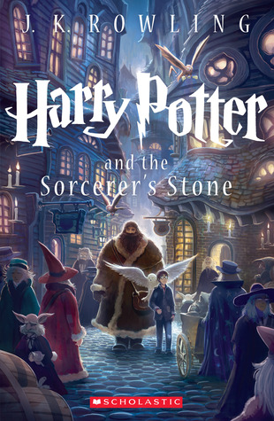
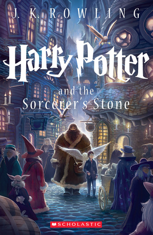

Joanne Rowling was born on 31st July 1965 at Yate General Hospital near Bristol, and grew up in Gloucestershire in England and in Chepstow, Gwent, in south-east Wales.
Her father, Peter, was an aircraft engineer at the Rolls Royce factory in Bristol and her mother, Anne, was a science technician in the Chemistry department at Wyedean Comprehensive, where Jo herself went to school.
Anne was diagnosed with multiple sclerosis when Jo was a teenager and died in 1990, before the Harry Potter books were published. Jo also has a younger sister, Di.
The young Jo grew up surrounded by books. “I lived for books,’’ she has said. “I was your basic common-or-garden bookworm, complete with freckles and National Health spectacles.”

 
